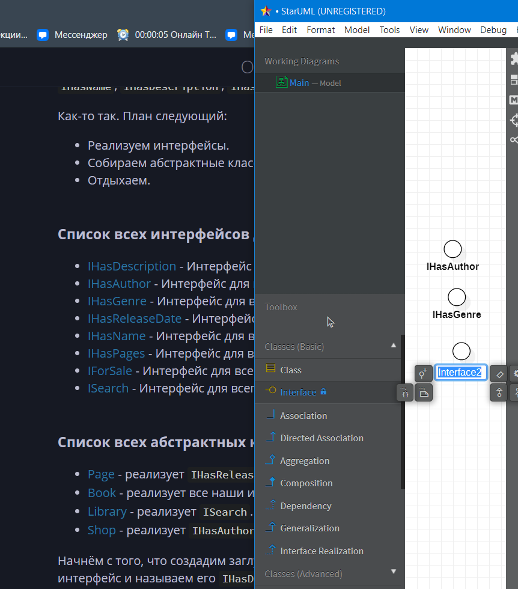
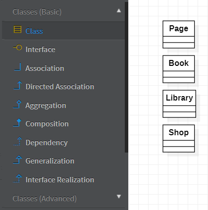

Задание 3. Создание архитектуры приложения с помощью интерфейсов
Последовательность выполнения задания следующая:
- Изучить возможность и преимущества создания архитектуры приложения с помощью интерфейсов.
- Написать в отчет о работе краткую справку об использовании абстрактных классов и интерфейсов при проектировании крупных промышленных приложений. Советуем посмотреть видеоурок https://www.youtube.com/watch?v=eXapyrhtj7I&t=111s
- Создать архитектуру собственного приложения с помощью интерфейсов. Обеспечить частичную или полную реализацию классов. В качестве примера можно выбрать: книжный магазин, расширенный блокнот для делопроизводства, интернет магазин для продажи компьютеров и т.п.
- Разработать и включить в отчет диаграмму UML для вашего приложения.
Часть 1
Интерфейсы - это основной кирпичик, позволяющий использовать композицию вместо наследования. Ознакомимся с тем, что же такое эта "композиция"
Композиция вместо наследования
Википедия:
Предпочтение композиции перед наследованием - это принцип проектирования, который придает дизайну большую гибкость. Более естественно создавать классы бизнес-домена из различных компонентов, чем пытаться найти общность между ними и создавать генеалогическое древо. Например, педаль акселератора и рулевое колесо имеют очень мало общих черт, но оба являются жизненно важными компонентами автомобиля. Что они могут делать и как их можно использовать с пользой для автомобиля, легко определить. Композиция также обеспечивает более стабильную бизнес-сферу в долгосрочной перспективе, поскольку она менее подвержена причудам членов семьи. Другими словами, лучше составить то, что объект может делать (имеет-a), чем расширять то, что он есть (is-a).
Первоначальное проектирование упрощается за счет определения поведения системных объектов в отдельных интерфейсах вместо создания иерархической взаимосвязи для распределения поведения между классами бизнес-домена посредством наследования. Этот подход легче приспосабливается к будущим изменениям требований, которые в противном случае потребовали бы полной реструктуризации классов бизнес-домена в модели наследования. Кроме того, это позволяет избежать проблем, часто связанных с относительно незначительными изменениями в модели, основанной на наследовании, которая включает несколько поколений классов. Композиционное отношение более гибкое, поскольку его можно изменять во время выполнения, в то время как отношения подтипов статичны и требуют перекомпиляции на многих языках.
Некоторые языки, в частности Go и Rust, используют исключительно type composition.
Шаблоны игрового программирования. Роберт Найстром
Дальнейший материал данного пункта полностью взят из перевода указанной книги.
Когда объектно-ориентированное программирование появилось на сцене впервые, наследование было самым любимым из всех его инструментов. Оно было объявлено ультимативным молотом повторного использования кода и кодеры постоянно им размахивали. С тех пор мы на собственных ошибках убедились в том, что этот молот может быть слишком тяжел. Наследование имеет свое применение, но для повторного использования кода оно обычно слишком громоздко.
Ему на замену в программирование пришел новый тренд: композиция взамен наследования везде, где это возможно. Вместо совместного использования кода двумя классами, которые наследуются от какого-то одного класса, мы позволяем им обеим обладать одним и тем же экземпляром этого класса.
Часть 2.
Возможную версию справки об использовании абстрактных классов и интерфейсов при проектировании крупных промышленных приложений можно посмотреть тут.
Часть 3.
Для начала определимся с идеей. Тут у нас в приоритете создание чего-то такого промышленного. Возможные идеи:
- книжный магазин.
- расширенный блокнот для делопроизводства.
- интернет магазин для продажи компьютеров.
- http веб фреймворк.
- веб-сервис по генерации изображений искусственным интеллектом.
- веб-сервис по разработке дизайна приложения.
- канбан доска.
Тут мы ограничены лишь своей фантазией. Заметим, что сказано частично или полностью реализовать классы, что будет проблемой при создании абсолютно воображаемого приложения.
Возможная реализация архитектуры приложения с помощью интерфейсов
Ну что же, проект делать всеравно другой в итоге, сделаем книжный магазин! В интерфейсы пожалуй будем добавлять только методы.
Итак, какие сущности обитают в книжном магазине? Книги? В общем так, рассмотрим воображаемый сайт книжного магазина. Там обязательно есть кнопочка купить, есть страничка книги, есть поиск книг... На этом пожалуй хватит.
Пускай будет интерфейс IBook, хотя, тогда в нём будут лишь поля, да и громоздний наверное выйдет интерфейс...
Тогда сделаем интерфейсы IHasDescription, IHasAuthor, IHasGenre, IHasReleaseDate, IHasName, IPage, IHasPages.
Также, пускай будет интерфейс IForSale,
Из IHasDescription, IHasAuthor, IHasGenre, IHasReleaseDate, IHasName, IHasPages, IForSale. соберём класс книги, а потом попробуем собрать что-нибудь ещё.
Пускай будет интерфейс ISearch, который будет реализовывать возможность гибкого поиска по какой-либо коллекции, пускай будет абстрактный класс Library который будет использовать ISearch.
Также добавим абстрактный класс магазина Shop, где используем интерфейсы IHasAuthor, IHasName, IHasDescription, IHasReleaseDate
Как-то так. План следующий:
- Реализуем интерфейсы.
- Собираем абстрактные классы.
- Отдыхаем.
Список всех интерфейсов для реализации:
- IHasDescription - Интерфейс для всего, что имеет описание.
- IHasAuthor - Интерфейс для всего, у чего есть автор.
- IHasGenre - Интерфейс для всего, у чего есть жанр.
- IHasReleaseDate - Интерфейс для всего, у чего есть дата выпуска.
- IHasName - Интерфейс для всего, у чего есть имя или название.
- IHasPages - Интерфейс для всего, у чего есть страницы.
- IForSale - Интерфейс для всего, что можно продать.
- ISearch - Интерфейс для всего, что может реализовывать поиск.
Список всех абстрактных классов для реализации:
- Page - реализует
IHasReleaseDate,IHasName,IHasDescription. - Book - реализует все наши интерфейсы, кроме
ISearch. - Library - реализует
ISearch. - Shop - реализует
IHasAuthor,IHasName,IHasDescription,IHasReleaseDate.
Начнём с того, что создадим заглушки под каждый интерфейс.
Жмём (Ctrl+Shift+A), выбираем интерфейс и называем его IHasDescription, создаём.
Теперь проделаем это со всеми остальными, тоесть IHasAuthor, IHasGenre, IHasReleaseDate, IHasName, IHasPages, IForSale, ISearch.
Перед тем, как реализовывать IHasPages, придётся реализовать абстрактный класс Page, который будет реализовывать интерфейсы IHasReleaseDate, IHasName, IHasDescription
Хочется отметить, что в ходе выполнения работы список интерфейсов постоянно менялся, а они самым неожиданным образом становились частями разных классов, хотя изначально создавались только для Book и Library. Это ещё раз подчёркивает гибкость композиции.
А теперь спокойненько всё реализовываем. Вот примерная реализация:
IHasDescription
public interface IHasDescription
{
string Description { get; set; }
bool HasDescription() { return Description!= null && Description.Trim().Length > 0; }
void FormatDescription() { Description = Description.Trim(); }
void ClearDescription() { Description = ""; }
void GetDescription() { "Описание: ".Concat(Description); }
}
IHasAuthor
public interface IHasAuthor
{
string AuthorName { get; }
uint AuthorAge { get; }
string AuthorAbout { get; }
bool ValidateAuthor();
}
IHasGenre
public interface IHasGenre
{
HashSet<string> Genres { get; }
bool ContainsGenre(string genre) { return Genres.Contains(genre); }
string[] GetGenres() { return Genres.ToArray(); }
void AddGenre(string genre) { Genres.Add(genre); }
void RemoveGenre(string genre) { Genres.Remove(genre); }
}
IHasReleaseDate
public interface IHasReleaseDate
{
DateTime releaseDate { get; set; }
void ReleaseBook() { releaseDate = DateTime.Now.ToUniversalTime(); }
void SetReleaseDate(DateTime releaseDate) { releaseDate = releaseDate.ToUniversalTime(); }
DateTime ReleasedAt() { return releaseDate; }
bool isOlderReleased(DateTime someDate) { return releaseDate > someDate; }
bool isNewerReleased(DateTime someDate) { return releaseDate < someDate; }
}
IHasName
public interface IHasName
{
string Name { get; }
bool IsValidName(string name);
}
Мы дошли до IHasPages, а значит, пора реализовывать первый абстрактный класс - Page
Он должен реализовывать интерфейсы IHasReleaseDate, IHasName, IHasDescription.
Напишем, что мы их реализуем:
public abstract class Page: IHasReleaseDate, IHasName, IHasDescription
{
}
А затем нажмём по всем интерфейсам (Ctrl + '.') и создадим заглушки, а также создадим таким же образом конструктор, после чего просто пойдём дальше делать каркас нашего приложения.
Версия с заглушками:
public abstract class Page : IHasReleaseDate, IHasName, IHasDescription
{
public DateTime releaseDate { get => throw new NotImplementedException(); set => throw new NotImplementedException(); }
public string Name => throw new NotImplementedException();
public string Description { get => throw new NotImplementedException(); set => throw new NotImplementedException(); }
public bool IsValidName(string name)
{
throw new NotImplementedException();
}
}
IHasPages
public interface IHasPages
{
Page[] pages { get; set; }
int pagesCount() { return pages.Length; }
void addPage(Page newPage) { pages.Append(newPage); }
void removePage(int pageNumber) { pages = pages.Where((_, idx) => idx != pageNumber).ToArray(); }
}
IForSale
public interface IForSale
{
int price { get; set; }
int discount { get; set; }
int getPrice() { return Math.Max(price - discount, 0); }
}
ISearch
public interface ISearch <T>
{
T[] SearchAll();
T Find(Func<T, bool> predicate);
}
Теперь, когда мы реализовали все интерфейсы, пока бы начать реализовывать классы.
Page
public abstract class Page : IHasReleaseDate, IHasName, IHasDescription
{
protected Page(DateTime releaseDate, string name, string description)
{
this.releaseDate = releaseDate;
this.name = name;
this.description = description;
}
public DateTime releaseDate { get; set; }
public string name { get; set; }
public string description { get; set; }
public string Name => name;
public string Description { get => description; set { description = value; } }
abstract public bool IsValidName(string name);
}
Для книги нам необходимо реализовать все наши интерфейсы кроме ISearch:
public abstract class Book: IForSale, IHasAuthor, IHasDescription, IHasGenre, IHasName, IHasPages, IHasReleaseDate
{
}
Совет: пользуйтесь (Ctrl + '.') для реализации интерфейсов.
Book
public abstract class Book : IForSale, IHasAuthor, IHasDescription, IHasGenre, IHasName, IHasPages, IHasReleaseDate
{
protected Book(string name, int price, int discount, string authorName, uint authorAge, string authorAbout, string description, Page[] pages, DateTime releaseDate)
{
this.name = name;
this.price = price;
this.discount = discount;
this.authorName = authorName;
this.authorAge = authorAge;
this.authorAbout = authorAbout;
Description = description;
this.pages = pages;
this.releaseDate = releaseDate;
}
public string name { get; set; }
public int price { get; set; }
public int discount { get; set; }
public string authorName { get; set; }
public uint authorAge { get; set; }
public string authorAbout { get; set; }
public string AuthorName => authorName;
public uint AuthorAge => authorAge;
public string AuthorAbout => authorAbout;
public string Description { get; set; }
public abstract HashSet<string> Genres { get; }
public string Name => name;
public Page[] pages { get; set; }
public DateTime releaseDate { get; set; }
public abstract bool IsValidName(string name);
public abstract bool ValidateAuthor();
}
Libraryдолжен реализовыватьISearch`.
Library
public abstract class Library : ISearch<Book>
{
public abstract Book Find(Func<Book, bool> predicate);
public abstract Book[] SearchAll();
}
Абстрактный класс Shop реализует интерфейсы IHasAuthor, IHasName, IHasDescription, IHasReleaseDate
Shop
public abstract class Shop : IHasAuthor, IHasName, IHasDescription, IHasReleaseDate
{
protected Shop(string authorName, uint authorAge, string authorAbout, string name, string description, DateTime releaseDate)
{
AuthorName = authorName;
AuthorAge = authorAge;
AuthorAbout = authorAbout;
Name = name;
Description = description;
this.releaseDate = releaseDate;
}
public string AuthorName { get; }
public uint AuthorAge { get; }
public string AuthorAbout { get; }
public string Name { get; }
public string Description { get; set; }
public DateTime releaseDate { get; set; }
public abstract bool IsValidName(string name);
public abstract bool ValidateAuthor();
}
Часть 4.
Для построения UML диаграмм рекомендуется использовать StarUML
Вот такая диаграмма вышла в итоге:

Перейдём к процессу создания такой диаграммы:
После открытия программы у нас уже есть диаграмма Main, это и есть диаграмма классов.

Далее выберем интерфейс в меню слева:

И начнём добавлять в диаграмму наши интерфейсы:

После добавления интерфейсов добавим классы:

Обозначим их все абстрактными:

Теперь нам надо правильно соединить интерфейсы. Я начну с тех, которые были реализованы сразу во многих классах. Для этого посмотрим на то, какие классы что реализуют.
Для отображения реализации интерфейсов используйте тип соединения Inteface Realization
Заметим, что интерфейсы IHasName, IHasDescription, IHasReleaseDate были реализованы сразу в двух классах. Поэтому их мы соединим первыми:

Кстати, стоило бы заметить и то, что IHasAuthor также реализован в двух классах, но бывает.
Теперь соединим оставшиеся:
Конечная диаграмма классов: